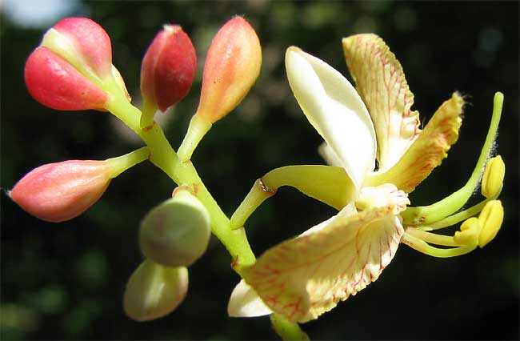
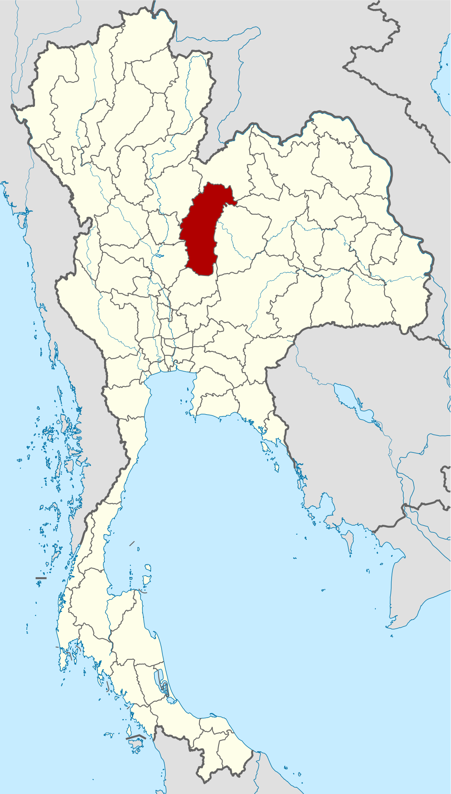

|
ติดต่อทางราชการ |
ข้อมูลเพิ่มเติม |
สถานที่ท่องเที่ยว |
| เกี่ยวกับจังหวัด | ||
|  | ดอกไม้ประจำจังหวัด | ดอกมะขาม |
| คำขวัญ | เมืองมะขามหวาน อุทยานน้ำหนาว ศรีเทพเมืองเก่า เขาค้ออนุสรณ์ นครพ่อขุนผาเมือง | |
|  | ความเป็นมา | ในรัชสมัยพระบาทสมเด็จพระจุลจอมเกล้าเจ้าอยู่หัว มีการรวบรวมหัวเมืองตามชายแดนที่สำคัญตั้งเป็นเขตการปกครองใหม่ ขึ้นเป็นระบบมณฑลเทศาภิบาล ในปี พ.ศ. 2442 มณฑลเพชรบูรณ์ได้ตั้งขึ้นเป็นอิสระ เนื่องจากท้องที่มีภูเขาล้อมรอบ มีการเชื่อมต่อคมนาคมกับมณฑลอื่นไม่สะดวก ลำบากแก่การติดต่อราชการ และโอนเมืองหล่มสัก อำเภอหล่มเก่า อำเภอวังสะพุง มาขึ้นกับมณฑลเพชรบูรณ์ ยุบเมืองวิเชียรบุรีเป็นอำเภอ โอนอำเภอบัวชุม (ปัจจุบันเป็นตำบล) อำเภอชัยบาดาลขึ้นกับเมืองเพชรบูรณ์ มณฑลเพชรบูรณ์จึงมีสองเมือง คือ หล่มสัก กับ เพชรบูรณ์ พ.ศ. 2447 ได้ยุบมณฑลเพชรบูรณ์ และได้ตั้งเป็นมณฑลอีกในปี พ.ศ. 2450 และได้ยุบอีกครั้งในปี พ.ศ. 2459 จังหวัดเพชรบูรณ์ในขณะนั้นมี 4 อำเภอ ได้แก่ อำเภอเมือง อำเภอวัดป่า (ปัจจุบันคือตำบลในอำเภอหล่มสัก) อำเภอวิเชียรบุรี และกิ่งอำเภอชนแดน จนกระทั่ง พ.ศ. 2476 ได้ยกเลิกมณฑลต่าง ๆ ทั่วประเทศ |